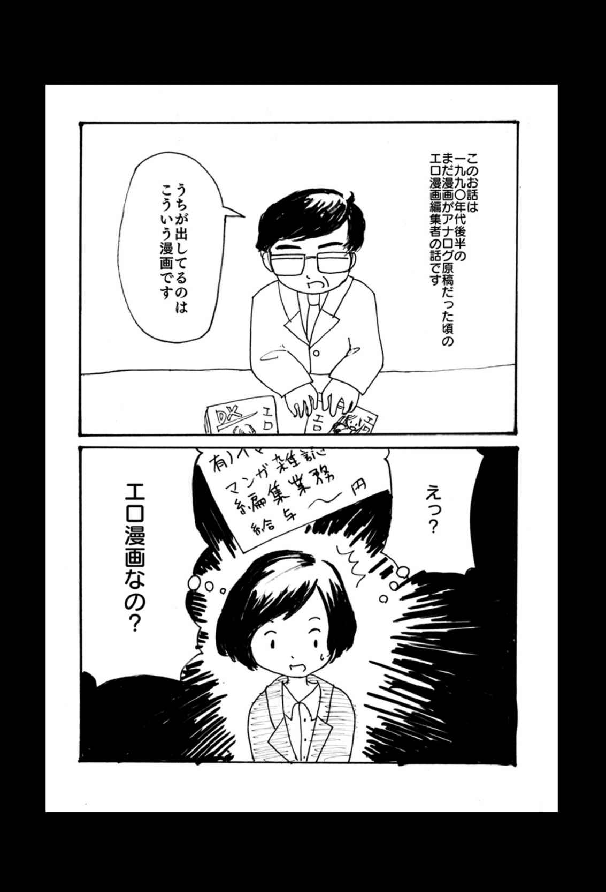
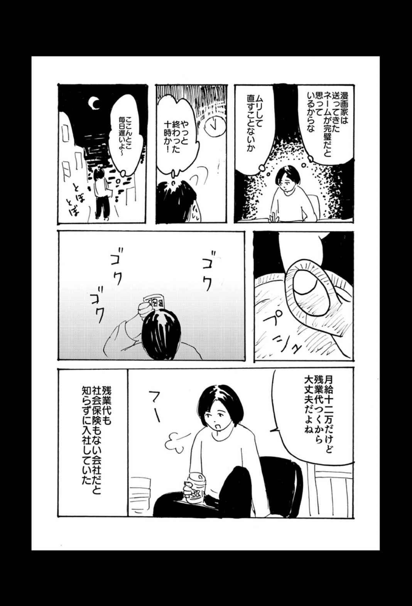
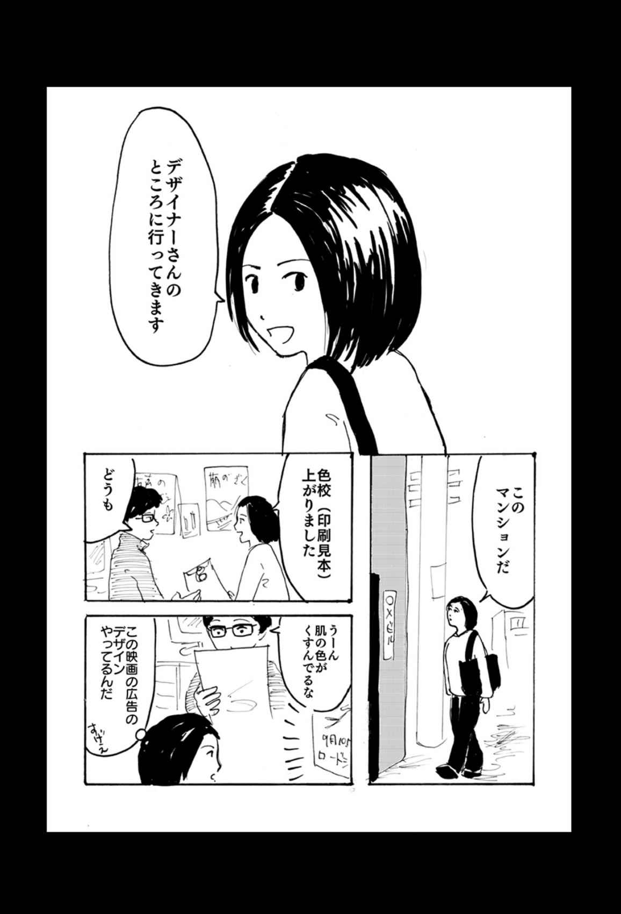

| 女編集者残酷物語（この地獄を生きるのだ） | |
| 小林エリコ | |
| イースト・プレス (2017) | |





この地獄を生きるのだ
うつ病、生活保護。死ねなかった私が「再生」するまで。
小林エリコ
イースト・プレス
はじめに
目の前にコンソメの箱があった。夜８時のスーパーで私は黄色と赤のパッケージをじっと眺めている。３９８円。値札にはそう書かれていた。手に取りたくても取ることができなかった。大根と鶏のむね肉だけをカゴに入れてレジに向かおうとするのだが、その場を動く気にもなれない。
家にある調味料はめんつゆだけだった。醤油の味に飽きていた。何日間も同じ味を味わっていると舌がおかしくなる。洋風の料理が食べたい。コンソメスープが飲みたい。大根と鶏のむね肉と一緒に煮たらさぞかし美味しいだろう。
でも、大根と鶏肉を合わせた値段よりも高価な調味料を買うことは非常に勇気がいる。誰かに背中を押してもらわないと買えない。
「これくらい買っても大丈夫だよ」
「調味料だから長持ちするよ」
そう言ってもらえたら買う決心がつくのに。でも、そんな言葉をかけてくれる人もいないし、何の躊躇もなくコンソメをレジに持っていくお金もない。
私はとても貧しくて、ひもじかった。貧しさは人の心を穢す。
長袖の裾にコンソメの箱をそっと入れた。細心の注意をはらい、袖の中をくぐらせ、仕事用の鞄の中に滑り込ませる。何事もなかったような顔をしてレジに並ぶ。大根と鶏肉の代金を払う。お釣りを財布に入れて外に出る。一刻も早くその場から立ち去りたかった。いつもより足早に店を出た。誰かに気付かれたらどうしようかと不安だった。誰も追いかけてこないことにホッとしていた。
アパートの鍵を開ける。６畳の部屋は衣類や簡単な家具だけでいっぱいで、一人でいるのにうさぎ小屋のような狭さだ。小さな冷蔵庫に食料品を詰め込む。
シャワーを浴びて髪の毛を乾かす。化粧水も何もつけない。肌はカサカサだった。
蚊取り線香のような形をした電熱線のレンジ台に鍋をのせる。狭い台所で大根と鶏肉を切る。サラダ油を少し入れて温まったところに鶏肉を入れる。続けて大根も入れる。木べらで炒めてから水を加える。ぐつぐつと茹だったのを見計らって、仕事用の鞄からコンソメを取り出す。銀色に包まれたコンソメの紙をピリリと破く。茶色い塊は鶏肉や牛肉やいろんな野菜を煮詰めた味がするのだ。私は実家で母が作ってくれたコンソメスープを思い出していた。
白いお湯に溶けてゆく茶色のキューブ。私の気持ちも同じように溶けてしまえばいいのにと思った。この寄る辺の無い不安が溶けてなくなってしまえばいいのに、と。
お金がないこと、仕事が多すぎること。働いても、働いても12 万円しかもらえないこと。国民健康保険に入れなくて、東京にいるのに故郷の父の保険証を使わなければならないこと。いくつもの不安をコンソメスープと一緒に飲み込んだ。不安はまた私の中に蓄積された。
本当にお金がなくなった。入社時に「ボーナスが出る」と言われたのだが、出なかったのだ。少しは生活が楽になると思っていた。私は絶望した。
短大を卒業後、就職浪人をした私がようやくありつくことのできた仕事は、エロ漫画雑誌を編集する仕事だった。漫画が好きで応募したものの、エロ専門の会社だとは思わなかった。入社してからは毎日のように夜遅くまで働いた。基本給が安くてもなんとかなると考えていたが、実際には残業代もつかず、社会保険もなかった。
それでもお盆休みはもらえた。私は実家に帰った。母がすき焼きを用意してくれた。牛肉を最後に食べたのはいつだろう。ガツガツと食べる私を見て母は驚いていた。休みが終わって東京に戻ると仕事はさらに増えていた。
外注するとお金がかかるので、グラビアページのデザインを自分でやらなければならない。豊満な身体と笑顔のまぶしい女性の写真を眺めながら、その女性がより一層魅力的に見える言葉を考えていた。
自分はこんなに惨めで笑うことすらできないのに、綺麗に化粧をしてどこかの海辺で笑っている女性を誉めそやしている。私はきっと一生、海外になんて行けないだろう。私の人生に白い砂浜なんてこれっぽっちも関係がない。
デザイン料の５万円をカットするため、私の仕事は一層増えた。しかし、カットした５万円が私の懐に入ることはない。５万円があれば何が買えるだろう。コンソメが買える。牛肉だって買えるだろう。それから、それから......。
考えたって無意味なのだ。手に入らないものについて考えたって意味がない。早く仕事を終わらせないといけない。デザインが終わったら原稿を取りに行って、漫画のセリフの写植を貼って、印刷所に出して、それから、それから......。
家では泣き続ける日々が続き、夜もあまり寝られなくなった。土曜日の午前中に頑張って通っていた精神科にも行けなくなった。午後２時に精神科のドアのチャイムを鳴らして「薬だけでも出してください」と懇願した。私は薬を飲まなければ眠れない身体になり、精神の安定が保てなくなった。
だが、薬を飲んでも不安を消すことはできない。やがて精神科に通院するのがバカバカしくなり、通うのをやめた。飲み忘れた薬が大量に余っていた。それを捨てないでいたのは私の意思だったのだろうか。
「今月号を出したら死のう」
校了の文字をひたすら書き続けながら、頭の中では死ぬことしか考えていなかった。
すべての仕事が終わった週末、私は崩れるように泣いた。学生時代の友人たちに電話をして、仕事が辛いこととお金がないことを話した。友人たちはそれぞれの生活に忙しく、話は聞いてくれるものの、解決策は示してくれなかった。私はこれから死ぬことは口にしなかった。
アルコールと一緒に、余っていた向精神薬を飲んだ。薬は思っていたよりたくさん余っていて、飲んでも、飲んでも減らなかった。めんどくさいな、と思いつつ飲んだ。
薬を全部飲み終えると横になった。家のドアの鍵は開けておいた。鍵が開かなかったら騒ぎが余計に大きくなるだろうから。それが私の最後の気配りだった。
気がついたら私は病院にいて、身体中が管だらけだった。３日間意識不明だった。たくさんの看護師が私を見ていた。両親がベッドの側にいた。二人とも泣きそうな顔をしていた。私はその二人の姿を見ても何も考えることができず、ふたたび目を閉じた。
自殺は未遂に終わった。
私は死ねなかった。
そんな死ねなかった私が再生するまでのお話です。
目 次
{kind=link}
第２章 ケースワーカーとの不和
第３章 「お菓子屋さん」とクリニックのビジネス
第４章 漫画の単行本をつくる仕事
第５章 普通に働き、普通に生きる
第６章 ケースワーカーに談判、そして
第７章 人生にイエスと叫べ！
おわりに
本書は、著者の同人誌『生活保護を受けている精神障害者が働くまで（仮）』（２０１４年11 月）を大幅に加筆修正したものです。
また、巻末の漫画は著者の同人誌『女編集者残酷物語』（２０１６年９月）を一部修正して収録しました。
第１章 精神障害、生活保護、自殺未遂
自殺未遂を起こして実家に戻ったとき、私は21 歳だった。東京のアパートで大量に薬を飲んで寝ている私を友人が発見し、救急車で大学病院に運ばれた。３日間、意識不明で生死の境をさまよったのち、一命をとりとめた。
医者からは「精神病院に入院するように」と告げられた。精神病院はどこも満杯でなかなか空きが見つからない。空いている病院があったが、下見をした母は「こんなところに娘を入れられない」と諦めた。それからなんとか、もう１軒空いている病院を見つけ、私ははじめて精神病院に入院した。
精神病院での生活は退屈で、そして悲惨なものだった。最初の頃は散歩もさせてもらえず、病棟に閉じ込められていた。テレビは壊れて電源がつかなかったし、ソファは破れて中の綿がぼろぼろこぼれていた。突然、全身がこわばり、看護師に不調を訴えると説明もなく注射を打たれる。入院している他の患者さんに話を聞くと「５年間入院している」という。私は自分の未来を想像し、一抹の恐ろしさを感じた。
ここから脱出するには「いい患者」、すなわち「看護師に迷惑をかけない患者」でいなければならない。ある日、病棟から実家に電話をかけていたら話が長引いてしまい、私のあとに電話を使いたかった患者さんと喧嘩になってしまった。彼女は私の部屋まで押しかけ、罵詈雑言をまくし立ててきた。だが、看護師を呼んだら問題が大きくなるので、ベッドの中で泣きながら我慢した。他の患者と揉め事を起こさず、看護師の目に留まらないように入院生活を送った結果、３か月で退院することができた。
退院して実家に戻り、再就職のために就活していることを主治医に告げると「２、３年は働かないで休息するように」と言われたので、私は言いつけ通り休んだ。
収入もないのに実家にいるのは苦痛だった。そんな折に、主治医から障害者手帳の申請を勧められた。税金の面で優遇してもらえたり、福祉サービスを受けられるというのだ。私はいまの生活が少しでも楽になるならと思い、障害者手帳の申請をすることにした。医者に診断書をもらい、申請書を書いて市役所の障害支援課に提出すると、半年以上経った頃に手帳が交付された。私はこの瞬間、精神障害者となった。
月日が過ぎ、24 歳になっていた。いくらか調子がよくなったので、そろそろ働こうと思い、アルバイトの面接に応募した。前の仕事を辞めた理由を聞かれ、本当の理由は言えず「体調を崩したので」と答えたが、結局は受からなかった。この年齢で、実家暮らしでアルバイトを始めるのは、世間から見たら奇妙なことなのだろうか。一度の自殺未遂で狂ってしまった人生の歯車はもう元にはもどらない。その後も面接を受け続けたものの、すべて落とされた。私は溜め込んでいた向精神薬を一気に飲んだ。
私が倒れているのを見つけた母は、急いで車を出して病院に連れて行く。応急処置を受けている私の横で、母は娘が死なないように祈る。入院中に必要な衣類、洗面用具を準備するために自宅と病院を往復し、お菓子やジュースを買って、入院中の娘を母は見舞った。退院するとき、母は私の荷物をまとめてくれた。２年くらい経つと元気になって、また仕事をしようと面接を受けるが、ことごとく落ちて、落ち込み、ふたたび自殺に走る。昼間、突然不安になり、自殺しようとすることもある。
こんなことを繰り返している娘と同居する母の気持ちはどんなものなのだろうか。母はきっと、娘が死にさえしなければいいと思っていただろう。娘の機嫌を損ねないように生活をし、娘の食事の準備、洗濯、掃除をし、病院に行くときには車を出す。自殺未遂をする娘を世話する母はアルコール依存性の夫の世話をする妻のようだ。不安定な娘の世話に母は疲れ切っていただろう。しかし同時に、私の面倒をみることは母の生き甲斐にもなっていた。私の失敗をすべて拭い去る母と私は、完全に共依存関係にあった。
すでに、誰も私の回復を信じていなかった。医者も親も。そして私自身も。
「腕のいい医者がいる」という情報を聞きつけると、その病院を訪れて受診した。何度も転院を重ねるうちに信頼できる主治医に出会った。主治医が独立して開業すれば、そのクリニックに通院した。そこは診察室のほかにデイケアが併設されていて、主に外来患者が利用できるようになっていた。デイケアとは作業やレクリエーションなどを通して生活リズムを安定させたり、コミュニケーション能力の訓練をしたりする場所だ。スタッフには看護師や精神保健福祉士、作業療法士などがいる。
精神科の診察とデイケアでのリハビリのため、１週間のうち、３回ほどクリニックに通う。デイケアでは同じ病気の人とおしゃべりをしたり、料理をしたり、歌を歌ったり、ゲームをしたりして過ごした。日々の行き場がない私にとって、デイケアだけが社会とのつながりだった。
そんな毎日が数年間続いた。仕事をしていないと昼間はとても長い。自分がデイケアで過ごしているあいだに同年代の人たちは会社に行って働いていることを思うと、世間と自分の現状との隔たりが恐ろしかった。デイケアで同じ病気の人に出会うとその恐怖は少し紛れたが、根本的な解決にはならなかった。
いつしか「一生デイケアに通わなければならないのか」という不安から、デイケアに行くと具合が悪くなりはじめた。30 歳を目の前にして何の仕事もしておらず、大人の幼稚園のようなデイケアに通うだけの毎日。デイケア以外の場所に行きたいのに、デイケア以外に行く場所がない。そのことに気がつくと、また無性に死にたくなった。
そんなある日、クリニックから電話がかかってきた。
「小林さん、いつまでも実家にいないで一人暮らししなさいよ」
クリニックでは自立のため通院患者に家を出ることを勧めていた。私はいつも「仕事もないのに家を出れるわけないじゃないですか」と断っていた。しかし一方で、私は実家を出たいとも感じはじめていた。朝から晩まで話し相手は母親だけという生活に辟易していたのだ。
また、実家は恐ろしく辺鄙な場所にあった。平坦な道が続き、ときおり、ポツンと店が現れる。その店も、できてはつぶれ、違う店が入る。空いたまま誰も入らない店舗もある。喫茶店など滅多になかったが、あるとき突然、スターバックスができた。大きな商業施設の中にあり、ほとんどの利用客は車で行くのだろうが、私は車の免許を持っていないので自転車で行った。くたくたになるまで自転車を漕いで、フラペチーノを頼む。だが、スターバックスはそんな苦労をしてまで行く店ではない。
スターバックスの隣には回転寿司のお店があり、ジャージを着たカップルがときおり食事している。商業施設を出ると、ときどきガソリンスタンドがあるのみだ。最寄りの本屋に行くのには自転車で30 分以上は軽くかかる。しかし欲しい本はお店に置いていないので、毎回取り寄せなければならない。
これがこの土地のすべてだった。生まれ育った土地ではないため、10 代の頃の知り合いに会わずに済むのはありがたいが、それ以上に寂しさがこみ上げてくる。
私は東京が好きだった。高校時代にいわゆる「サブカル」の本や音楽に出会い、渋谷や中野に憧れた。短大は都心を選んだ。短大で新しくできた友達と渋谷のタワーレコードで新譜を探し、中野のタコシェや新宿の模索舎（ともに自費出版物などを扱うお店）でミニコミを買った。週末はクラブやライブハウスへ行き、踊り狂った。
そんな私にとって、この田舎はあまりに退屈だった。それに、友達はみんな東京に住んでいて、会う機会がぐんと減った。東京の友達には新しい友達ができて、私のことはあまり気にかけてもらえなくなった。人づてに友達が結婚したと聞いた。結婚式にも呼んでもらえないくらい、私は忘れ去られていた。
漫画の編集者になり、生活が苦しかったあの頃、どん底ではあったが、友達とも頻繁に会い、家にも遊びに来てくれた。貧乏だったが、まだそばに誰かがいた。
都心とは言わずとも、せめてもうちょっと東京に出やすいところに住みたい。いま住んでいる場所は新宿まで軽く２時間はかかる、電車を逃したら次の電車まで30 分待たなければならないこの街は生きづらい。
そもそも仕事に就けたとしても、この実家から通うことができるのか不安だ。仕事を探していた頃、何社か東京の会社を受けたのだが、すべて落とされた。私の経歴に問題があるのかもしれないが、この田舎に住んでいることも原因のひとつだと思う。通勤する自信もないまま面接を受けていたのが面接官にも伝わっていたのだろう。
近所で働こうと日曜の新聞に入る広告に目を通してみても、求人はほとんどなく、車がなければ通勤は難しそうだ。田舎での暮らしに馴染むこともできず、何の希望も見いだすことができない。
それに、私だってこれ以上、自殺行為を繰り返すのはこりごりなのだ。自殺未遂の場合は健康保険が適用されず、医療費を10 割払わなければならない。繰り返しの自殺未遂で身体もボロボロだ。私はやっと覚悟を決めた。生まれ変わらなければいけない。家を出よう。
「実家を出たいです。出られるんですか」
「出られるわよ。仕事を探せばいいし、なんなら生活保護っていうのもあるのよ」
スタッフはこともなげにサラリと答えた。
生活保護ってなんだろう。障害者が使える福祉サービスのひとつだろうか。私は障害の重さが認められれば一定の額の年金が支給される障害年金を受給していた。ふた月に一度、銀行口座に十数万円が振り込まれる。生活保護も障害年金のようなものなのかもしれない。
スタッフの軽い口調から、そんなに特別な制度ではないのだろうと思った私は、生活保護がどのような制度なのか詳しく聞くことはしなかった。家を出るための手段として「生活保護」という単語を頭の片隅に置いておいた。
家を出る決意を伝えてからは、母はクリニックのスタッフと面談のため、頻繁に外出するようになった。ある日、面談を終えて帰宅した母はこう言った。
「エリコちゃんは一人暮らしなんて無理よね。できないわよね。料理は毎日お母さんが作ったものを食べているし、洗濯もできないし、お掃除だってしないものね。全部お母さんがやっているものね。エリコちゃんはどれもやっていないもの。お風呂掃除はたまにしているけど、それだけじゃね。ゴミ捨てもわからないし。エリコちゃんには一人暮らしはできないわ。無理よ」
母にとって精神病を患い、生活能力もなく、自宅とデイケアの往復しかしない娘が一人暮らしをするなど、まるでおとぎ話のようなものだ。服薬管理ができず、病院からもらった薬をためこんで一度に３００錠も飲んでしまう娘だ。母は私が大量服薬できないように薬を隠すようになった。死にたいときに薬が見つからず、私はイライラして母に当たり散らしていた。そんな娘でも母は家にいてほしいというのだ。
この世で私のことを本気で心配しているのは母だけだった。こんな私のことを大切な家族の一員として愛してくれている母に対して感謝しなければならない。しかし、私にとって母の愛は重すぎた。私は早く母に見捨てられたかったし、それが叶わないのならば、自殺という形でこの世から消え去りたい。社会から疎外され、何の能力もない私は早く死んだほうがいい。私が実家にいることを許す母は、私が社会に属していなくてもいい、生活能力がなくても構わないと、知らず知らずのうちに決めつけているのだ。
クリニックと相談を重ねた結果、すぐには仕事が見つからないことを見越して、しばらくは実家から仕送りをもらいながら一人暮らしをするということで話がついた。母は最後まで心配していたが、アパートをクリニックの近くで探すことと、スタッフの「お子さんのことは任せてください」という言葉を信じて承諾した。きっと、自分よりも医療従事者に任せたほうがいいと母も判断したのだろう。父の定年退職まであと１年。その時点で仕送りがストップしてしまう。クリニックは１年以内に私を仕事に就かせると約束した。「安心してください。必ず就労させます」というスタッフの言葉に、私も安心していた。
住む物件は母と探した。スタッフが言うには、家賃を生活保護の住宅補助の限度額に抑えたほうがいいらしい。選べる部屋は限られていた。昼から物件を見て、夕方になっても条件の合う部屋が見つからない。最後に見た物件は玄関の脇に洗濯機置き場があった。女が住むのには向いていない。２階建てアパートの２階の部屋。お風呂とトイレは別。ベランダが南向きなのはありがたい。母は南向きにこだわっていたので、この物件が気に入ったらしく、いやに褒める。たしかに床は６畳くらいあるし、押入れもあり、収納は十分だ。しかし、玄関脇の洗濯機が気になる。せめて、ベランダならいいのだが。だが、ひとつくらい気に入らない点があるのは仕方ない。そもそも他にいい物件がないのだ。致し方なくこの物件に決めて、30 歳の春、実家を出た。
一人暮らしを始めてからは、親元を離れた解放感と就労を約束してもらえた安堵感からか、生きている実感が持てた。
爽やかな初夏の風の中、自転車を漕いでスーパーに向かう。新しい街並みは私を歓迎しているようだった。新鮮なアジをスーパーで買って、どうやって料理しようかとクックパッドで調べる。アジの南蛮漬けと白いご飯に舌鼓を打ち、自分で用意した食事はなんて美味しいのだろうと感動した。
デイケアは午後からなので午前中はゆっくりアパートで過ごす。テレビを見ながら洗濯物をかたづけると、着替えてクリニックに向かう。12 時には到着して昼食をとり、14 時からのプログラムに参加する。プログラムが終わると、デイケアのメンバーとおしゃべりをして過ごす。デイケアで夕食を食べ、18 時には家に帰る。デイケアに通うのにも張り合いが出て、毎日参加していた。しかし、デイケアは仕事ではない。スタッフの指示のもと、手芸をしたり、簡単な料理を作ったりするだけだ。
私は就労に向けて動き始めるのを待っていた。スタッフは母に「必ず就労させます」と約束していた。だからこそ、私は家を出ることが許されたのだ。他のメンバーがクリニックを通じて仕事を紹介してもらったり、合同面接会に連れて行ってもらったりして、職を得てデイケアを卒業していくたびに「次は私の番だ」と期待していた。
「仕事はもうちょっとちゃんとデイケアに通えるようになったらね」
そう言われると、ますますデイケアに真面目に通った。約束をスタッフが破るはずがないと私は思っていた。
そんな日々を半年ほど続けたものの、なおもクリニックのスタッフから具体的な就労の話が出てこないことに対して、不安が芽生え始めた。デイケアで行われているアクティビティは就労に結びつかないという意味で、私にとってはただの日中の時間つぶしでしかない。
クリニック内で擬似就労体験を行うプログラムはあった。「カレーハウス」という、クリニックを見学しに来た人たちにカレーを提供するものだ。朝早くデイケアに来て、前日にスーパーで買っておいた食材を調理するのだが、10 人近く参加しているので、何もできずに突っ立っているだけの人もいた。もともとみんな料理があまり得意ではなく、積極的に取り組む人は少ない。ときには鍋を焦がし、ときにはご飯がべちゃべちゃになり、お世辞にも美味しいと言えるカレーではなかったが、それでもお客さんたちはきちんとお金を払って食べてくれた。そのお金は働いたメンバーに配分されるが、一人当たり数百円程度で、何らかのスキルが身につくわけでもなく、就労体験とはいえず、おままごとのようなものだった。
私はクリニックに不満を抱きはじめていた。だが、その気持ちをスタッフに言うことはできない。スタッフのご機嫌をそこねたら、私はクリニックに居るのが難しくなるからだ。母にも相談しなかった。心配をかけたくなかったし、元気でやっていることにしておきたかった。
そうこうしているうちに、実家からの仕送りが途絶える時期が迫ってきた。翌月には仕送りがストップすることが決まった頃になってようやく、私はスタッフに相談をすることにした。スタッフに相談をする際は、あらかじめ面談の予約を入れる決まりになっている。面談日は２週間先だった。
私が他人に相談事をするのが苦手な理由は、相手の時間を割いてもらうことが申し訳ないと思ってしまうからだ。私は自分の価値が低いと感じている。相談する時間をとってもらうのも、何かお願い事をするのにも躊躇してしまう。私みたいな人間が、他人の時間を使うことは悪いことではないか。そうやって問題を自分一人で抱え込んで手に負えなくなってから、はじめて人に助けを求めるのだが、その頃には問題事が膨らみすぎて解決が困難になってしまっている。私に必要なのはもっと早く人に助けを求めることなのだと思う。面談室で勇気を出して事情を話した。
「仕送りが来月で途絶えます。収入は障害年金だけになってしまいます。どうやって生活をしていけばいいんでしょうか」
スタッフがどう答えるのか興味深かった。就労に結びつけるといっていたのに、ずっと後回しにしていたのだ。言い訳をするのだろうか、私に対して謝ったりするのだろうか。相手の目をじっと見た。スタッフはちょっと考えてからこう答えた。
「そうね、障害年金だけじゃ生活できないわね。あなたの場合は生活保護がいいと思うわよ。受けるならうちのスタッフが手続きを手伝うから」
あまりにあっさりとした返答だった。まるで最初から生活保護を受けることが決まっていたかのようだった。本当にそれでいいのだろうか。しかし、私には生活保護を受ける以外の選択肢はない。
「生活保護を受けます」
それについて何ひとつ知らないまま、私は答えた。するとスタッフは慣れた口調で保護を受けるにあたっての指示をした。
「受けるなら銀行の貯金が減ってからのほうがいいから、いまあるお金で電化製品を買い換えなさい」
「電化製品を買い換えるんですか？ お金がないのに？」
「これから買えなくなるのよ。いまのうちに買っておきなさい。貯金が５万円以下になったら、また相談に来て」
「はあ」
どうしてそうしたほうがいいのか私にはわからなかったが、スタッフの言う通り電化製品を高価なものに買い換えた。ＶＨＳのビデオデッキを捨てて、高価なブルーレイディスクレコーダーを購入し、テレビもブラウン管のものを捨てて薄型のものに買い換えた。貯金はあっという間に減って５万円を切った。
「電化製品を買い換えました。貯金は言われた通り５万円以下になりました」
「その通帳を持って一緒に市役所に行きましょう。生活保護の手続きに行きます」
「いまからですか？」
「そう、これから行きます。車を出すから、後ろに乗って」
私はこれからどうなるのかさっぱりわからなかった。
それから１週間くらいのあいだ、何回も自宅とクリニックと市役所を行ったり来たりした。そのときのことははっきりとは覚えていない。どのような順序で手続きを踏んだかわからない。覚えているのは市役所の職員に通帳を見られ、財布の中身を小銭までチェックされ、わら半紙に印刷された生活保護に関する説明を読ませられたことだ。そこには小学生向けのテスト用紙のように大きく文字が書かれていて、ご丁寧に漢字にふりがなまで振ってある。
「私は高校生のときは国語で学年トップだったんだ！」
と、怒鳴りつける気も起きない。過去は過去。いまの私は簡単な漢字すら読めない人間にカテゴライズされている。障害支援課のように優しく丁寧に説明してくれるのを期待していたのだが、生活保護課の役人は無愛想で冷たかった。
生活保護申請の書類はとてもシンプルだった。住所と氏名と生年月日くらいしか書くところがない。職員はまるで子供に向かって話すかのように大きな声で制度について説明し、そのことが私のプライドをズタズタに引き裂いた。福祉サービスを受けるってこんな屈辱的なことだったのか。私はうつむいたまま書類を眺め続けていた。生活保護のお金は毎月１日に入るという説明を受けながら、気持ちはどこか遠くにいってしまっていた。早く家に帰りたかった。
生活保護を受け始めてわかったのは、この先に明るい未来などないということだった。毎月定期的に生活保護費は銀行に入金されたが、それ以上も以下もない、ただそれだけの日々がそこには待っていた。
ケースワーカーは訪問しに来るだけで、今後の就労について話すことは一切なかった。月に一度ふいにやって来ると、
「体調はいいですか」
と、玄関先で質問をする。
「元気です」
そう答えると書類にメモをして、足早に去っていった。
そもそも仕事をしてもいいのだろうか。それすらわからない。もう一度外の世界とつながるには働かなければいけないのに、役人は何も教えてくれない。毎月支給される生活保護費で暮らしていて、生活保護の生活に慣れていくことが怖くなった。
「私は一生、生活保護のままで、このアパートで暮らすんだ」と思ったら、目の前が真っ暗になった。寿命が来るまで何年かかるんだろう。30 年だろうか、それとも40 年？ 何十年も誰にも会わずに暮らしていかなければならないのなら死んだほうがいい。
楽しいことは何ひとつなかった。好きだった映画館からも足が遠のいた。お金がなくて行けないのもあるが、生活保護を受けているうしろめたさから娯楽を楽しむことができなくなったのだ。昔からの友達にも会いにくくなった。来日した海外アーティストのライブに行こうと誘われたが、生活保護を受けているとは言えずに断った。勇気を出して友人に会っても、友人の納めた税金で生活していることで罪悪感が湧いてしまい、申し訳なさで頭がいっぱいになり、だんだん人に会うことを自分からやめていった。自分の中に恥の感情が膿のように溜まっていき、排出されることもなく、私の身体を蝕んでいった。ひとりぼっちで生きていたくない。今度こそ死のう。そう心に決めた。
インターネットで自殺について書かれた掲示板を見ていた。なんでも、カフェインを大量に摂ると人は死ぬそうである。カフェインが大量に含まれている薬品の名前が書き込まれていた。これらの薬品の元々の役目は、受験勉強中の学生や深夜に働かなければならない人が眠気を覚ますためのものだろう。ネットの人たちはどこからこういう情報を得るのだろうか。苦しみから逃れられる情報に私はすがった。
「これを３箱ください」
店員は薬品を袋に入れてレジを打った。この薬を大量に買っても何も言われないということは、私がこれを飲んで死ぬつもりであるとは思っていないのだろう。ネットに載っているのだから私のほかに自殺目的で買った人がいても不思議ではないはずだが、薬局でこの薬を大量に買うことは禁止されていないのだろうか。
ひとつの店舗で大量に薬を買うと変に思われるので、３か所くらい店を回ることにした。薬局のドアをくぐる。いらっしゃいませと店員の明るい声が響く。レジに向かっていき、店員さんに薬品名を告げる。とても簡単だった。
半径１キロ以内の薬局で何回も同じ薬を買い求めた。自転車のカゴには同じパッケージばかりが入ったビニール袋が３つ詰め込まれていた。ビニール袋は風に揺れてカサカサ音を立てた。その音はおじいちゃんを火葬したときに聞いた、乾いた骨の音みたいだった。
錠剤を箱から出して飲み始めた。いつも飲んでいる向精神薬と違って大きい錠剤なので飲みにくい。未遂で終わってはいけない。全部飲めるだろうかと不安になった。錠剤を水でがぶがぶと飲み干すと、疲れ切って、横になった。
目を覚ますと、私は救急病院に搬送されていた。鼻にチューブを入れられ、胃を洗浄される。警察官に薬を何錠飲んだのかと繰り返し聞かれるが、答えられない。何度も吐き気がこみあげてくるが、胃の中はすでに空っぽで、黒い炭しか出てこない。飲んだ薬の成分を吸着させるために投与されたらしい。炭の混じった胃液が髪の毛に絡まった。
看護師の声で「また先生いなくなって！」と聞こえる。担当医がいないのだろうか。「よいしょ！」の掛け声とともに身体を少し浮かし、ベトベトの髪と身体のままストレッチャーに移動した。
「レントゲンを撮りに行きますよー」
看護師に話しかけられながら、レントゲン室に向かう。背中に当てられた板がひんやりして気持ちいい。撮り終わると処置室に移動した。また警察官がやってきて「実家の電話番号は？」と聞いてくる。答えるのに力を振り絞る。
「うぇーと......ぜろ、にい......わかあない......」
思考能力が奪われ、呂律も回らない。
口からよだれが溢れ、「ぐううー」と変な声が出てしまうが、看護師さんが拭ってくれた。ドアの奥から姿を見せた母は「エリコちゃん！」と悲痛な叫び声をあげた。
「お母さん、ごめんなさい、こんなことはもうしません」
思い通りに身体が動かず、変な方向に腕を回しながら、必死に謝った。遅れてきた父はおどおどしながら私を見ていた。
「お父さん、ごめんなさい、こんなことはもうしません」
まるで壊れた機械のように、ごめんなさいの言葉を繰り返した。父は黙ってうんうんと頷いていた。母はその後ろで、悲しそうな目をしていた。
医者が現れた。父と母は頭を下げた。甲高い声でぶっきらぼうに処置の説明をしていた。両親は「申し訳ない」といった感じで頭を下げて聞いていた。父は医者にときどき質問をしていた。
尿道と鼻に入っている管が苦しくて、外してしまいたくなる。
「お母さん、この鼻の管とって」
「活性炭を入れているからとっちゃダメなんだって」
「いつとれるの」
「お母さんにはわからないよ」
苦しそうにする私を案じて、母が看護師さんに管は何時頃に取れるのか尋ねた。
「今夜の12 時ですね」
まだ６時だ、先は長い。そう思うと呼吸が苦しくなる。２、３分が30 分くらいに感じる。いつ管が取れるのだろう。なぜだかわからないが、ジョン・レノンの「イマジン」がひどく聞きたくなった。12 時まであと６時間もある。鼻のチューブが取れたらこの苦しみは軽減されるのだろうか。カテーテルだらけになり、痣が身体中にできていた。全身を拘束されているので、身体は思うように動かせない。
悲鳴をあげるように泣く母を見て、私は情けなくなった。涙も、ごめんなさいの言葉も出なかった。父は「生きててよかった。本当に心配したんだ。生きててよかった」と言いながら、私の手をさすっていた。
今度こそ死ねると思っていた。けれど死ねなかった。自殺は失敗に終わった。私は「また生きなければならない」という虚無感に浸っていた。
一命をとりとめた私はそのまま１週間入院した。鎖骨に針を刺され、人工透析を何回も受けた。心身ともにぼろぼろで、体力が戻らず苦労した。立って歩くだけでも大変だったし、自分がまだ生きていて動けるのは不思議だった。
退院の際は母がやってきて、入院中に増えた荷物を旅行用のバックに詰めてくれた。エレベーターを降りて会計に向かう。１階の待合室で椅子に座ってジュースを口にすると、甘ったるいオレンジの味が口に広がる。会計をしている母の後ろ姿を眺めていた。母は財布を手にしたまま会計の人と何かを話していたが、「えっ！」と小さな驚きの声をあげて、私のところに戻ってきた。
「お金を払わなかったわ。エリコちゃん、生活保護だからお金を払わなくていいんですって」
自殺未遂の救命には相当のお金がかかることを知っている母は呆然としていた。私にとって生活保護は人を生かすものではなく、殺すものでしかなかったが、結果として私は生活保護に助けられていた。
病院の待合室に座ったまま、ぼんやりしていた。
「一人暮らしを始めてから１年半経ったんだ......」
誰に話しかけるでもなく、ぽつりと呟いた。
もうすぐ夏がやってくる。半袖から覗く私の腕は点滴の跡がポツポツと残り、細く頼りなかった。医療用のテープを貼った跡がかゆい。少し汗ばんだ手を握りしめながら、顔をあげて窓を見た。病院の待合室から見える新緑は光を浴びてさわやかに色づいていた。私は泣き方も忘れていた。
『女編集者残酷物語（この地獄を生きるのだ）』をご覧いただきありがとうございます。
続きは製品版『この地獄を生きるのだ』にてお楽しみください。
本作品の全部あるいは一部を無断で複製・転載・配信・送信したり、ホームページ上に転載することを禁止します。
本作品の内容を無断で改変、改ざん等を行うことも禁止します。
また、有償・無償にかかわらず本作品を第三者に譲渡することはできません。
著者プロフィール
小林エリコ
１９７７年生まれ。茨城県出身。短大卒業後、エロ漫画雑誌の編集に携わるも自殺を図り退職、のちに精神障害者手帳を取得。現在も精神科に通院を続けながら、ＮＰＯ法人で事務員として働く。ミニコミ「精神病新聞」を発行するほか、漫画家としても活動し、ウェブ上で発表された「宮崎駿に人生を壊された女」が話題となる。同人誌即売会「文学フリマ」にて頒布された『生活保護を受けている精神障害者が働くまで（仮）』を大幅に加筆修正した本書が初の著書。
女編集者残酷物語（この地獄を生きるのだ）
紙書籍発行日 ２０１７年12 月15 日
電子書籍発行日 ２０１７年12 月15 日
著者 小 林 エリコ
発行所 株式会社イースト・プレス
〒１０１‐００５１
東京都千代田区神田神保町２‐４‐７ 久月神田ビル
http://www.eastpress.co.jp/
© Eriko Kobayashi 2017
ISBN978-4-7816-1608-7 C0095（紙書籍）